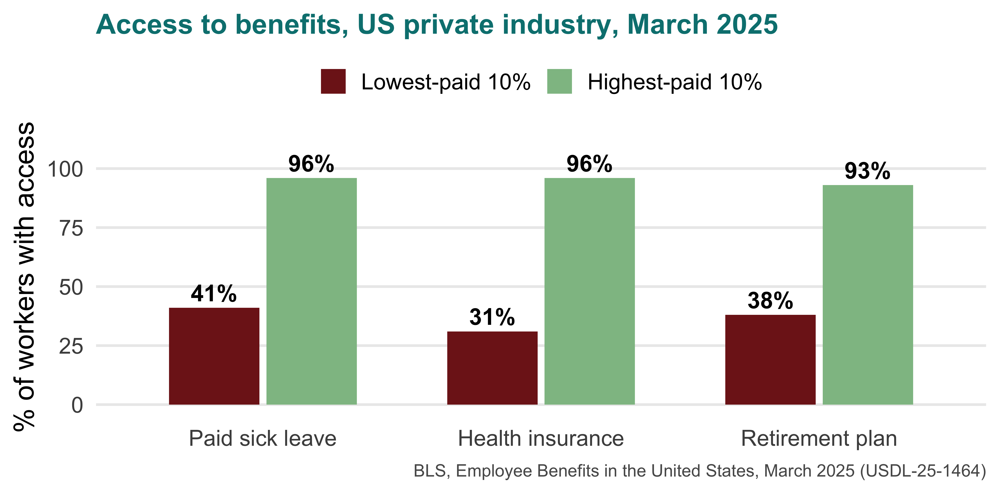
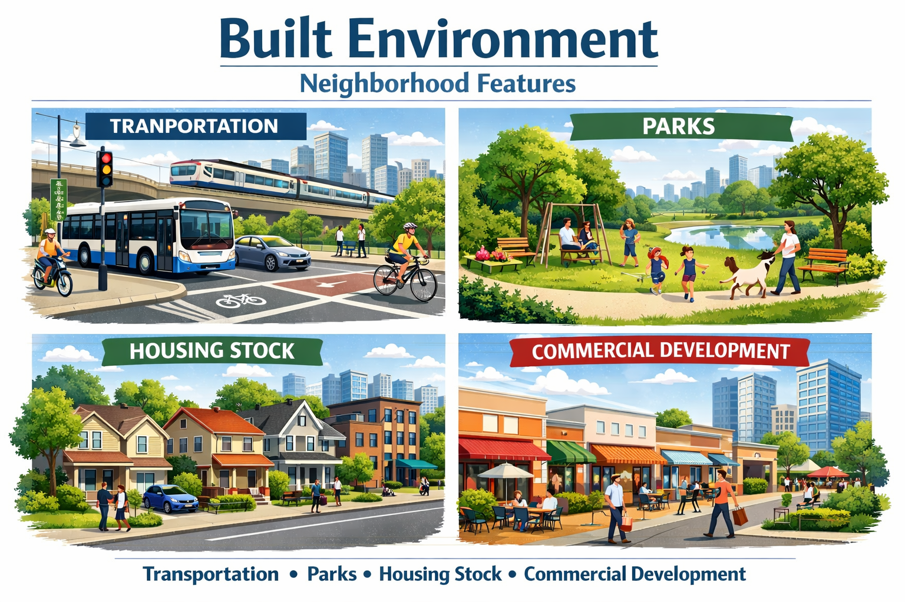

Where You Actually Feel It
Structural Foundations of Health — Part 2 of 2
Last class, in one slide
Without looking at your notes: what does it mean that health is a staircase and not a cliff?
Turn to your neighbour. Thirty seconds.
Today
Advantage is distributed unevenly, and the distribution has a history.
Today: where you actually feel it.
Home
Work
Neighbourhood
Policy
Then: how you would study a real community — and a group exercise doing it.
1. Home
Housing does three separate things
- What it is made of — lead, mould, pests, cold
- What it costs you — rent takes the money that would have been food or a co-pay
- Whether you get to stay — three moves in a year: new school, lost doctor, no sleep
Only the first is about the building. The other two are money and stability.
One concrete case: lead
Lead paint was legal in US homes until 1978 — and is still in those walls.
Old housing is concentrated in poor neighbourhoods. Lead damages the developing brain, and the damage does not reverse.
And the cost side
Paying more than 30% of income on rent = cost-burdened. Above 50% = severely cost-burdened.
Quick one: rent goes up $200 a month, income doesn’t. What comes out of the budget first?
Name three things. Which of them are health?
2. Work
The wrong question and the right one
Wrong question: do you have a job?
Right question: what does the job do to you?
Two people both “employed” can have completely different health prospects.
Three ways a job reaches your body
The body takes it
Lifting, repetition, chemicals, heat
The mind takes it
High demand, low control, unpredictable hours
It follows you home
Pesticides, solvents, dust on your clothes

The middle one is the surprise: high demand + low control predicts heart disease. Being busy is not the problem. Being busy with no say is.
Who actually gets benefits
Why paid sick leave is a health policy
41% of the lowest-paid workers can take a paid sick day. 96% of the highest-paid can.
So the person handling your food, minding your child, or turning your grandmother in bed is the one who cannot afford to stay home sick.
Their working conditions are your exposure. This is why we study populations, not individuals.
And a growing group with none of it
Independent contractors: 7.4% of US employment — 11.9 million people.
Health insurance from any source:
- Traditional employees — 85%
- Independent contractors — 74%
- Temp agency workers — 61%
No employer means no employer-sponsored anything: no sick leave, no workers’ comp, no unemployment insurance. Insecure work, insecure health.
3. Neighbourhood
What is built around you

And what is put near you
Environmental justice: pollution, heat and industrial hazards are not spread evenly — they concentrate in low-income neighbourhoods and neighbourhoods of colour.
Remember last class: cheap land is where the highway goes.
Which came first — the polluting plant, or the poor neighbourhood around it?
There is evidence for both. Why does the answer matter for policy?
What it does
- Lungs — asthma, COPD; children worst affected
- Heart — fine particulate exposure raises cardiovascular risk
- Heat — less shade, more asphalt; heatwave deaths cluster in the same blocks
- Mind — noise, no green space, and knowing this was allowed to happen here
This is the redlining map again, wearing a different coat.
4. Policy
The lever
Home, work and neighbourhood are all downstream of decisions somebody made.
Pushes health up
- Income support (EITC)
- Medicaid expansion
- Paid leave laws
- Lead abatement funding
Pushes health down
- Zoning that blocks affordable housing
- Mass incarceration
- Weak housing-code enforcement
None of these is called a health policy. All of them are.
A natural experiment: Medicaid expansion
In 2014, some states expanded Medicaid and some did not. Same country, same decade.
9.4%
Reduction in annual mortality among low-income adults aged 55–64 in expansion states.
And the rest of the picture

Expansion also cut medical debt sent to collections by about 42% (Hu et al. 2018).
How would you study a community?
Two different jobs
Community assessment
One place, in depth.
- You go there; you talk to people
- Assets as well as problems
- Ends with: a plan somebody can act on
Population assessment
Many places, from above.
- Registries, surveys, vital statistics
- Compare counties, states, countries
- Ends with: a pattern, and where to look next
Neither is better. Each is bad at the other’s question.
Same city, two questions
Population: Which PA counties have the highest diabetes rates? → surveillance data, a map, a ranking
Community: Why this neighbourhood, and what already exists here that could help? → walk the streets, count the shops, ask the clinic
Your individual paper is a community assessment — of your own hometown. That is why it cannot be written from data alone.
Group exercise
Your community
Each group gets one:
- A rural coal town after the mine closed
- An urban neighbourhood with no supermarket
- A recent immigrant community
- A tribal reservation
- A gentrifying neighbourhood
What to do — 15 minutes
Find three things making people in your community sicker. One must be home, work or neighbourhood.
Trace one backwards. What decision, by whom, put it there?
Propose one change. Say who has the power to make it.
Be specific. “Improve access to healthy food” is not an answer. “Move the bus stop” might be.
Then report back — 2 minutes each
Tell us:
- Your community, in one sentence
- Your three problems
- The one change you would make, and who would have to make it
Everyone else: listen for a problem that appears in more than one community. Those are the structural ones.
Where this goes next
- Tuesday 8 Sept: Quiz 1, then theories and frameworks
- Groups formed, topics assigned, peer pairings announced
- Read: Chapter 4, sections on determinants
- Assignment 1 due Friday 11 September, midnight
Now: into your groups
Where You Actually Feel It – Population Health Where You Actually Feel It – Population Health Where You Actually Feel It – Population Health Population Health Structural Foundations of Health — Part 2 of 2 Structural Foundations of Health — Part 2 of 2